방송통신기사 (2005-03-06 기출문제)
1과목: 디지털 전자회로
1. 그림과 같은 ECL 회로의 논리출력은? (단, Y, Y'는 출력단자)
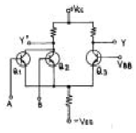
- Y : NAND, Y': AND
- Y : AND, Y': NAND
- Y : NOR, Y': OR
- Y : OR, Y': NOR
(정답률: 알수없음)

2. 그림은 진폭 VP가 3[V], 펄스폭 λ가 0.25[㎳], 반복주파수가 1[㎑]의 펄스파이다. 평균치를 지시하는 계기로 측정하면 몇[V]가 되는가?
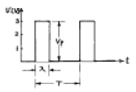
- 0.75
- 1.5
- 2
- 3
(정답률: 알수없음)
3. 그림과 같은 회로에서 Zenner 다이오드의 파괴 전압은 50[V]이며, 그 전류 범위는 5 -40[㎃]이다. 부하저항 RL에 흐르는 전류 IL의 최대값은 얼마인가?
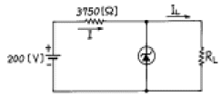
- 45[㎃]
- 35[㎃]
- 25[㎃]
- 15[㎃]
(정답률: 알수없음)
4. 그림과 같은 궤환 증폭기에 관한 설명 중 틀린 것은?
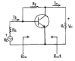
- 궤환으로 인하여 입력임피이던스 Rin은 감소한다.
- 궤환으로 인하여 출력임피이던스 Rout는 감소한다.
- 궤환으로 인하여 전류이득 Io/Is는 감소된다.
- Rf가 작을수록 Vo는 커진다.
(정답률: 알수없음)
5. RC결합 증폭기의 이득이 높은 주파수에서 감소되는 이유는 어떤 것인가?
- 출력회로내에 병렬용량이 있기 때문이다.
- 부하저항의 영향을 받기 때문이다.
- 증폭소자의 각 정수가 주파수에 따라 변하기 때문이다.
- 기생발진을 하기 때문이다.
(정답률: 알수없음)
6. 논리 IC의 종류 중에서 표준특성으로 비교할 때 팬 아우트(fan out)의 수가 가장 많은 것은?
- 표준형 TTL
- 쇼트키 TTL
- ECL
- CMOS
(정답률: 알수없음)
7. 다음 논리식을 간략화 하면?
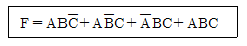
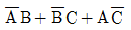
- A B + B C + C A
- A B + C A
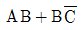
(정답률: 알수없음)
8. 다음 카운터의 명칭은?
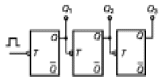
- 동기식 8진 업카운터
- 비동기식 8진 업카운터
- 동기식 8진 다운카운터
- 비동기식 3진 다운카운터
(정답률: 알수없음)
9. 다음 중 평형변조회로를 사용하는 가장 적합한 목적은?
- 변조도를 크게 하기 위해
- 직진성을 개선하고 변조 일그러짐을 없애기 위해
- SSB파를 얻기 위해
- 변조 전력을 줄이기 위해
(정답률: 알수없음)
10. 다음 그림과 같은 회로명은?
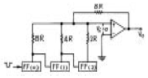
- 슈미트 트리거 회로
- 멀티 바이브레이터 회로
- 계단파 발생회로
- 펄스 카운터 회로
(정답률: 알수없음)
11. 디지털데이터를 전송하는데 PSK 변복조회로와 관계가 없는 것은?
- 디지털신호에 대응하여 위상이 변조된다.
- 3, 5, 7, 9 등의 다상방식이 있다.
- 평형변조회로가 이용된다.
- 복조시 동기검파를 한다.
(정답률: 알수없음)
12. 항이 2㏁ 이고 콘덴서가 1㎌ 인 다음 회로에서 출력전압 Vo에 대한 식으로 맞는 것은?
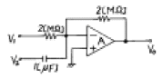
- Vo = -(V1+2＋V2dt)
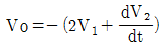
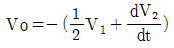
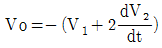
(정답률: 알수없음)
13. 다음 발진회로에 대한 설명 중 틀린 것은?
- CR 발진기는 비교적 낮은 주파수에 적합하다.
- 수정진동자의 Q는 매우 크다.
- 부궤환시키면 발진 주파수가 증가한다.
- 수정발진기는 유도성 리액턴스에서 동작시킨다.
(정답률: 알수없음)
14. 멀티 바이브레이터의 단안정, 무안정, 쌍안정의 동작은 무엇에 의해 결정되는가?
- 결합회로의 구성
- 전원전압의 크기
- 바이어스전압 크기
- 전원전류의 크기
(정답률: 알수없음)
15. 부울대수(Boolean algebra) y의 보수를 취한 결과는?
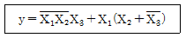
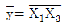
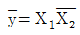
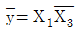
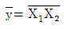
(정답률: 알수없음)
16. 어떤 출력증폭회로의 입력과 출력파형이다. 이 증폭회로의 설명으로 맞는 것은?
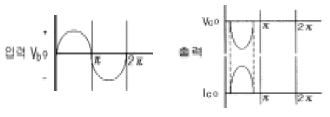
- C급증폭으로 고주파 대출력에 적합하다.
- B급증폭으로 중대역 대출력에 적합하다.
- A급증폭으로 소신호 전압증폭에 적합하다.
- AB급증폭으로 저주파 전류증폭에 적합하다.
(정답률: 알수없음)
17. 연산 증폭기(Op-Amp)의 응용 회로가 아닌 것은?
- 적분기
- 디지털 반가산 증폭기
- 미분기
- 아날로그 가산 증폭기
(정답률: 알수없음)
18. NOR 게이트로 구성된 SR 플립플롭에서 전의 상태를 유지하기 위해서는 SR이 어떤 경우일 때인가?
- SR = 01 일 때
- SR = 11 일 때
- SR = 10 일 때
- SR = 00 일 때
(정답률: 알수없음)
19. 다음 중 불연속 레벨 변조에 해당되는 것은?
- PCM
- AM
- PM
- FM
(정답률: 알수없음)
20. 다이오드를 사용한 정류회로에서 여러 다이오드(n개)를 직렬로 연결하여 사용하면 어떤 장점이 있는가?
- n배의 출력전압을 얻을 수 있다.
- 과전압으로 부터 보호할 수 있다.
- 부하 출력의 맥동률을 감소시킬 수 있다.
- AC 전원으로 부터 많은 전력을 공급받을 수 있다.
(정답률: 알수없음)
2과목: 방송통신 기기
21. 다음 중 위성지구국의 설치장소의 선정조건이 아닌 것은?
- 정지위성을 직선으로 바라볼 수 있는 넓은 지역
- 비행기의 항로가 아닌 곳
- 기상조건이 좋은 곳
- 인근에 방송국이 위치한 곳
(정답률: 알수없음)
22. 다음 중 가장 전력효율이 높은 방식은?
- A 급
- B 급
- AB 급
- C 급
(정답률: 알수없음)
23. 안테나에서 수신한 신호를 필요한 레벨까지 올려서 전송로에 송출하기 위한 장치는?
- 전치증폭기
- 분배기
- 신호처리기
- TAP OFF(인입단자)
(정답률: 알수없음)
24. 임피던스 정합이 이루어지지 않으면 반사파가 생겨 급전선상에 정재파가 발생한다. 정재파가 발생하는 경우의 현상으로 틀린 것은?
- 급전선의 손실이 증가되나, 불평형 급전선에서는 전파특성이 좋아진다.
- FM방송에서 왜율이 증가한다.
- 송신기의 출력회로의 조정이 곤란하다.
- TV방송에서 고스트(Ghost)가 여러개 생길 수 있다.
(정답률: 알수없음)
25. 유선방송의 전송망 시스템에서 요구되는 전원으로 알맞은 것은?
- AC 10V
- AC 30V
- AC 60V
- AC 100V
(정답률: 알수없음)
26. 화면의 밝기가 변화할 때 색상이 변동하는 현상으로 특히 화면의 고휘도 부분에서 색이 적절치 않게 재생되는 현상은 영상시스템의 어떤 특성 때문인가?
- 휘도 비직선
- 색도 비직선
- 미분이득
- 미분위상
(정답률: 알수없음)
27. 방송 증폭기의 전압 증폭도가 10[dB]와 30[dB]인 증폭기를 직렬로 연결시켰을 때 종합 이득은?
- 10,000
- 1,000
- 100
- 10
(정답률: 알수없음)
28. FM방송수신기에서 스켈치 회로의 사용 목적은?
- 안테나로부터 불필요한 복사를 방지한다.
- 국부발진주파수 변동을 방지한다.
- FM전파 수신시 내부 잡음을 제거한다.
- 입력 신호가 없을 때 수신기 내부잡음을 제거한다.
(정답률: 알수없음)
29. 동기발생기(Sync generator)에서 제공되는 주요한 4가지 신호가 아닌 것은?
- 구동펄스(drive pulse)
- 블랭킹 펄스(blanking pulse)
- 동기 펄스(sync pulse)
- 빔 펄스(beam pulse)
(정답률: 알수없음)
30. 다음 중 위성지구국의 송출전력의 변수가 아닌 것은?
- LNB 잡음지수
- HPA 출력전력
- 송신안테나 이득
- 계통손실
(정답률: 알수없음)
31. 다음 중 TV의 음성회로에 디엠퍼시스 회로를 넣어 사용하는 목적은?
- 저주파 영역의 특성보정
- 버즈음 제거
- 고주파영역 특성보정
- 음성신호를 강하게하려고
(정답률: 알수없음)
32. 음성 방송 신호의 주파수가 200[MHz] 이라면 이때 파장은 얼마인가?
- 1 [m]
- 1.5 [m]
- 2 [m]
- 2.5 [m]
(정답률: 알수없음)
33. 영상내의 색정보, 즉 영상의 크로미넌스(Chrominance)정보를 그래픽 표시로 나타내는 측정계기는?
- Waveform monitor
- Color displayer
- Vector scope
- Level meter
(정답률: 알수없음)
34. 돌비(Dolby) AC-3의 채널은?
- 4채널
- 3.1채널
- 5.1채널
- 6.1채널
(정답률: 알수없음)
35. 다음 중 멀티미디어의 시스템을 만들 때 고려해야 할 사항과 가장 거리가 먼 것은?
- 동보화
- 집적화
- 다기능화
- 표준화
(정답률: 알수없음)
36. 다음 중 카메라의 위치를 움직이지않고 카메라 헤드만을 수평방향(좌우)으로 회전시키면서 촬영하는 것은?
- 패닝(panning)
- 틸팅(tilting)
- 달리(dolly)
- 붐(boom)
(정답률: 알수없음)
37. 다음 중 TV에 사용되는 빛의 3원색이 아닌 것은?
- 적색
- 황색
- 녹색
- 청색
(정답률: 알수없음)
38. 다음 중 위성통신의 장점이 아닌 것은?
- 회선 구성의 유연성
- 고장시 수리의 편이성
- 광역성, 동보성, 다원접속성
- 난시청 지역의 해소
(정답률: 알수없음)
39. 다음 중 지상파 TV 방송 수신안테나로 가장 많이 사용되는 안테나는?
- 애드코크 안테나
- 루우프 안테나
- 휩 안테나
- 야기 안테나
(정답률: 알수없음)
40. 다음 중 아나로그 FM방송 주파수대역에서 채널별 주파수대역을 고려할 때, 구성할 수 있는 최대 채널수는?
- 10개 채널
- 30개 채널
- 50개 채널
- 100개 채널
(정답률: 알수없음)
3과목: 방송미디어 공학
41. 뉴스, 일기예보, 주식시세 등 여러 가지 정보를 글자나 그림으로 만든 후, 이를 부호화하여 TV전파의 빈틈에 Digital Data의 형태로 삽입하여 송출하는 것은?
- 비디오텍스(Videotex)
- VAN(Value Added Network)
- ISDN(Integrated Service Digital Netywork )
- Teletext
(정답률: 알수없음)
42. 다음 중 방송의 발전추세가 아닌 것은?
- 디지털화
- 다채널화
- 양방향화
- 협대역화
(정답률: 알수없음)
43. 지상파 아날로그 방송에 대한 설명으로 거리가 먼 것은?
- 상호간에 의사 전달의 수단이다.
- 방송에서는 전달방향이 단일방향이다.
- 공중파 방송에서는 수신의 대상자가 불특정다수이다.
- 보도, 교양 등을 대중에게 전파함를 목적으로 방송국이 행하는 무선통신을 말한다.
(정답률: 알수없음)
44. 다음 중 영상 매체만으로 구성된 것은?
- 영화, DAT, TV방송
- 잡지, 영화, MP3
- 신문, MIDI, Video
- DVD, Video, TV방송
(정답률: 알수없음)
45. 위성방송의 특성에 대하여 가장 바르게 설명된 것은?
- 한반도 주변에서 타원궤도를 그리며 이동한다.
- 위성방송 수신시에는 Dipole 안테나가 필요하다.
- 고스트 현상이 존재한다.
- 비교적 화질과 음질이 우수하다.
(정답률: 알수없음)
46. 다음 중 어떤 음 A를 듣고 있을 때, A보다 진폭이 큰 음B가 가해지면 원래의 음 A는 들리지 않게 된다. 이러한 현상을 무엇이라 하는가?
- 카테일현상
- 마스킹현상
- 믹서현상
- 하울링현상
(정답률: 알수없음)
47. 다음 전송 매체 중 동시에 가장 많은 정보량을 보낼 수 있는 것은?
- 광 케이블
- 동축 케이블
- 쌍연식 케이블
- 전화 케이블
(정답률: 알수없음)
48. 다음 중 음의 3요소가 아닌 것은?
- 음색
- 음의 고저
- 음의 강약
- 음의 효율
(정답률: 알수없음)
49. 광 파장의 차이에 의한 색채감각을 나타내는 것으로 색의 종류를 표시하는 것은?
- 명도
- 포화도
- 색상
- 감도
(정답률: 알수없음)
50. 우리나라에서 지상파 디지털 TV의 음성압축방식은?
- MPEG-1
- Dolby AC-3
- MPEG-2
- MPEG-4
(정답률: 알수없음)
51. 다음 중 NTSC 방식에서 색신호의 대역폭은 얼마인가?
- 1.0MHz
- 1.5MHz
- 3.58MHz
- 4.2MHz
(정답률: 알수없음)
52. 다음 중 방송계 뉴미디어에 속하지 않은 것은?
- 디지털 TV
- DVD
- 디지털 유선방송
- 인터넷 방송
(정답률: 알수없음)
53. NTSC 영상신호에서 동기신호의 크기는 몇 IRE인가?
- 40IRE
- 70IRE
- 100IRE
- 140IRE
(정답률: 알수없음)
54. FM 방송에서 Pre-emphasis를 사용하는 이유로 가장 알맞는 것은?
- S/N 개선
- 출력 증가
- 반사손실 감소
- 높은 주파수의 출력 감소
(정답률: 알수없음)
55. 멀티미디어(multimedia)를 가장 적합하게 나타낸 것은?
- 무선, 동축케이블, 광케이블, 컴퓨터 등을 이용하여 데이터를 전송하기 위한 수단을 뜻한다.
- 소리, 동영상, 에니메이션, 이미지 등의 복합체를 뜻한다.
- 데이터 형태를 나타내는 표시 형태와 부호화 형태를 뜻한다.
- 컴퓨터 데이터를 저장하기 위하여 실제 사용되는 수단을 뜻한다.
(정답률: 알수없음)
56. 디지털 신호체계에서 원신호와 샘플링 주파수와의 관계는? (단, fs: 샘플링주파수, fmax: 원신호의 최대주파수)
- fs = fmax
- fs ≥ 2fmax
- fs ＜ 2fmax
- fs = 3fmax
(정답률: 알수없음)
57. 통신위성을 이용 현장에서 직접 뉴스소재를 취재하여 송수신을 할 수 있는 것은?
- ENG
- FPU
- SNG
- STL
(정답률: 알수없음)
58. 다음 중 뉴미디어 관련 기술과 거리가 먼 것은?
- 정보처리 기술
- 통신 기술
- 제조생산 기술
- 반도체 기술
(정답률: 알수없음)
59. 비디오 화상의 특정색을 뽑아내고 거기에 다른 화상을 끼워 넣는 전자적인 특수 효과로 가상 스튜디오를 구성할 때 주로 사용되는 기법은?
- Chroma Key
- Animation
- Non Linear Edit
- Digital Video Effect
(정답률: 알수없음)
60. 다음 중 멀티미디어의 특징이 아닌 것은?
- 멀티미디어 시스템은 두개 이상의 미디어를 동시에 사용 할 수 있다.
- 멀티미디어 시스템은 사용자와의 대화가 중요하지 않다.
- 사용자는 시스템을 통해 다양한 정보를 얻을 수 있다.
- 사용자는 시스템과 대화를 할 수 있다.
(정답률: 알수없음)
4과목: 방송통신 시스템
61. 다음 중 지상파 방송망 전송로의 특징으로 가장 알맞는 것은?
- 넓은 지역(한반도)을 동시에 서비스할 수 있다.
- 강우에 의한 감쇄가 크다.
- 로컬 서비스에 적합하다.
- 간단히 채널배치를 할 수 있다.
(정답률: 알수없음)
62. VSB 전송방식에 대한 설명으로 틀린 것은?
- SSB와 DSB의 장점을 취한 통신방식이다.
- TV방송에서 영상신호를 전송하는데 사용된다.
- 포락선 검파기로는 검파가 불가능하다.
- 선택성 페이딩의 영향을 비교적 덜 받는다.
(정답률: 알수없음)
63. 아날로그 TV 송신기의 구성요소가 아닌 것은?
- VSB변조기
- 주파수변환기
- 복조기
- Diplexer
(정답률: 알수없음)
64. TV수상기 등을 통하여 수신되는 방송의 시청 연령을 기계가 인식을 하여 보호자가 설정한 연령별(등급별) 신호와 일치 또는 불일치할 때에 지정된 기계작동을 하여 시청을 금지하거나 제재하는 역할을 하는 것으로써 청소년을 성인물과 폭력물의 영상매체로부터 보호하기 위하여 개발된 장치는?
- 변복조기(Modem)
- 스크램블(Scramble)
- 스마트카드
- V-칩(V-Chip)
(정답률: 알수없음)
65. 다음 중 케이블TV의 사업주체가 아닌 것은?
- SO(System Operator)
- NO(Network Operator)
- PO(Program Operator)
- PP(Program Provider)
(정답률: 알수없음)
66. FM 스테레오 방송에서 (L+R)채널과 (L-R)채널의 특성으로 틀린 것은?
- (L+R)채널의 부반송파는 19KHz이다.
- (L+R)채널은 FM 변조한다.
- (L-R)채널의 부반송파는 38KHz이다.
- (L-R)채널은 DSB-SC 변조한다.
(정답률: 알수없음)
67. NTSC 컬러 TV에서 색부반송파의 주파수는?
- 3.579545 MHz
- 3.589545 MHz
- 3.479545 MHz
- 3.588545 MHz
(정답률: 알수없음)
68. 다음 중 CATV 방송시스템의 H/E(head end) 설비의 구성요소로 틀린 것은?
- 상행 및 하행의 각종 데이터통신을 하기 위한 RF모뎀
- 유료채널의 동기신호를 압축하여 스크램블하는 TV 스크램블
- IF의 TV신호를 영상 및 음성 RF신호로 분리증폭하고 AGC기능이 있는 TV 시그널 프로세서
- TV 변조신호를 음성 및 영상신호로 변환하는 TV 디모듈레이터
(정답률: 알수없음)
69. 영상 입력전압에 대해, 전송선로의 비직선성으로 인하여 일그러짐이 발생하는 것은?
- 미분이득(DG), 미분위상(DP)
- 고스트 현상
- 비트방해
- 험변조
(정답률: 알수없음)
70. 신호의 크기를 나타내기 위해서 데시벨 스케일(Decibel Scale)을 사용한다. 만약 두신호의 전력차이가 2배라면 약 몇 dB의 차이인가?
- 2dB
- 3dB
- 4dB
- 5dB
(정답률: 알수없음)
71. 무궁화위성 방송용 중계기의 주파수 대역폭은?
- 6MHz
- 9MHz
- 18MHz
- 27MHz
(정답률: 알수없음)
72. 다음 중에서 위상동기루프(PLL)를 구성하는데 필수적으로 사용되는 소자가 아닌 것은?
- VCO
- 위상검출기
- 저역통과 루프필터
- 신호변조기
(정답률: 알수없음)
73. 방송 프로그램을 제작 또는 생중계하고 음향 및 조명기능을 가지고 있으며, 진행자의 촬영 모니터가 있는 시설은?
- 스튜디오 설비
- 편집실
- 녹음실
- 주조정실
(정답률: 알수없음)
74. 진폭변조 송신기에서 변조지수가 100% 일 때 출력이 300W이라면, 60% 변조일 경우의 출력은?
- 218W
- 225W
- 236W
- 250W
(정답률: 알수없음)
75. VHF 채널3의 주파수 대역(60‾6MHz)에서 영상 캐리어 주파수는?
- 60MHz
- 61.25MHz
- 62MHz
- 62.5MHz
(정답률: 알수없음)
76. 현재 우리나라의 위성방송 시스템에서 영상신호의 압축방식은?
- MPEG1
- JPEG
- MPEG4
- MPEG2
(정답률: 알수없음)
77. 유선방송의 방송망 구성시 전송 매체에 따라 유선을 이용한 동축 전송방식과, 광을 이용한 광전송방식 그리고 무선을 이용한 마이크로웨이브 방식이 있는데 다음 중에서 광전송방식이 아닌 것은?
- 아날로그 전송방식
- 디지털 전송방식
- 파장분할 다중방식
- 공간분할 다중방식
(정답률: 알수없음)
78. 어느 공중선의 급전점에서 방사저항이 20Ω 손실저항이 5Ω일 때, 방사전력이 40W 이라면 얼마의 입력전력을 공급하여야 하는가?
- 45W
- 50W
- 55W
- 60W
(정답률: 알수없음)
79. 동축케이블의 특성 표시로 '5C-2V'라고 쓰여있다. 첫 번째 기호인 5가 의미 하는 것은?
- 외부도체 내경
- 임피던스
- 피복종류
- 절연방식
(정답률: 알수없음)
80. 다음 중 위성방송 수신 시스템의 구성 요소가 아닌 것은?
- 파라볼라 안테나
- 저잡음 주파수 변환기
- 위성방송 수신기
- 정지위성
(정답률: 알수없음)
5과목: 전자계산기 일반 및 방송설비기준
81. 기계어를 기호(symbolic code)로 1 대 1 대응시켜 만든 언어는?
- 어셈블리어
- 고급언어
- 컴파일러
- 언어 프로세서
(정답률: 알수없음)
82. 인터럽트 발생시 프로그램의 복귀 번지를 저장하는 것은?
- Stack
- Queue
- Deque
- PC
(정답률: 알수없음)
83. 데이터를 모아 두었다가 어느 시기에 일괄해서 처리하는 방식은?
- 멀티프로그래밍(multi programming)
- 타임세어링방식(time sharing system)
- 배치처리(batch processing)
- 텔레프로세싱시스템(tele-processing system)
(정답률: 알수없음)
84. 다음 중 문자의 표시와 관계 없은 코드는?
- BCD 코드
- EBCDIC 코드
- 그레이(Gray) 코드
- ASCII 코드
(정답률: 알수없음)
85. 다음 중 주기억장치의 성능을 평가하는 단위가 아닌 것은?
- 기억소자
- 기억용량
- 사이클타임
- 액세스폭
(정답률: 알수없음)
86. 다음 중 시스템의 안정성을 고려하여 한쪽의 CPU가 가동중일 때, CPU가 고장이 나면 즉시 대기중인 CPU가 작동되도록 운영하는 방식은?
- 다중 처리 시스템
- 듀얼 시스템(Dual System)
- 분산처리 시스템
- 온라인 시스템(On-line System)
(정답률: 알수없음)
87. 다음 중 "0"에 대응되는 비트만 클리어 시킬 수 있는 동작은?
- 시프트 명령
- 배타적 OR 명령
- AND 명령
- OR 명령
(정답률: 알수없음)
88. 프로그램을 작성하는 과정에서 정보의 흐름, 처리과정 등을 이해하기 쉽게 논리적으로 표현하는 좋은 방법은 어느 것인가?
- control chart
- spacing chart
- diagram chart
- flow chart
(정답률: 알수없음)
89. 제어장치를 구성하는 요소가 아닌 것은?
- 제어 신호 발생기
- 명령 레지스터
- 명령 계수기
- 누산기
(정답률: 알수없음)
90. 다음 중 가장 큰 수는?
- (11101111)2
- (367)8
- (235)10
- (FB)16
(정답률: 알수없음)
91. 다음 중 정보통신공사업법에서 말하는 공사의 종류 가운데 방송국설비공사가 아닌 것은?
- 영상·음향설비
- 송출설비
- 방송관리시스템설비등의 공사
- 무선 CATV설비
(정답률: 알수없음)
92. 다음 중 무선국 허가의 유효 기간에 맞지 않는 것은?
- 실험국, 실용화시험국 - 1년
- 해안지구국, 이동지구국 - 5년
- 기지국, 중계국 - 5년
- 아마추어국, 무선측위국 - 3년
(정답률: 알수없음)
93. 다음 중 종합유선방송에서 디지털 유선방송을 위해 사용할 수 있는 대역은?
- 66 ㎒∼72 ㎒
- 390 ㎒∼396 ㎒
- 510 ㎒∼516 ㎒
- 552 ㎒∼750 ㎒
(정답률: 50%)
94. 다음은 방송위원회의 추천 및 승인시 심사의 내용이다. 심사내용이 아닌 항은?
- 방송의 공적책임, 공정성, 공익성의 실현 가능성
- 방송프로그램의 기획, 편성 및 제작계획의 적절성
- 지역적, 사회적, 문화적 필요성과 타당성
- 조직의 교육환경계획의 타당성
(정답률: 알수없음)
95. 자가 유선방송 설비공사는 건축물의 연면적 얼마 이하까지 공사업자외의 자가 시공 할 수가 있는가?
- 100[m2]이하
- 500[m2]이하
- 1000[m2]이하
- 1500[m2]이하
(정답률: 알수없음)
96. 방송사항의 제작·편성 및 조정에 필요한 설비와 그 종사자의 총체는 무엇인가?
- 송신소
- 연주설비
- 연주소
- 제작설비
(정답률: 알수없음)
97. 전파법에서 말하는 방송을 양호하게 수신할 수 있는 구역으로서 전계강도가 정보통신부장관이 정하여 고시하는 기준이상인 구역을 무엇이라 하는가?
- 양청구역
- 양호구역
- 실제구역
- 방송구역
(정답률: 알수없음)
98. 선로설비의 회선상호간, 회선과 대지간, 회선의 심선 상호간의 절연저항이 알맞는 것은?
- 직류 380[V] 절연저항계로 측정하여 1[㏁]이상
- 직류 500[V] 절연저항계로 측정하여 10[㏁]이상
- 교류 220[V] 절연저항계로 측정하여 20[㏁]이상
- 교류 380[V] 절연저항계로 측정하여 50[㏁]이상
(정답률: 알수없음)
99. 외국 인공위성의 무선설비를 이용하여 위성방송을 하거나 외국 인공위성의 무선국의 특정채널을 사용하고자 할 때 승인 신청서를 제출하는 곳은?
- 정보통신부
- 방송위원회
- 통신위원회
- 체신청장
(정답률: 50%)
100. 다음 중 음성·음향 등으로 이루어진 방송프로그램을 송신하는 방송은?
- 지상파방송
- 위성방송
- 라디오방송
- 유선방송
(정답률: 알수없음)